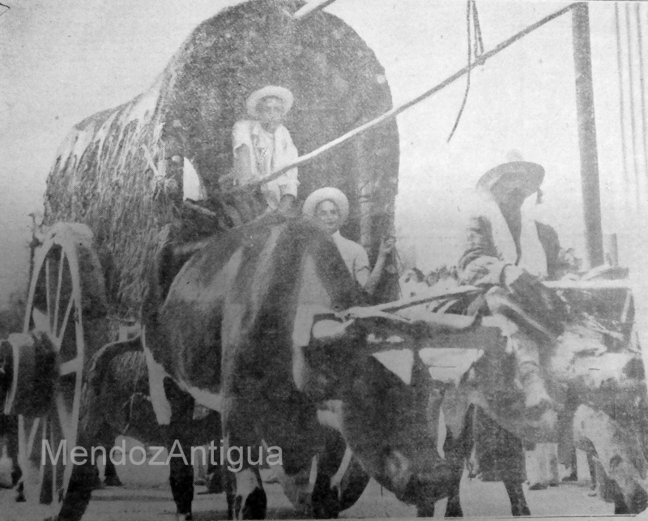

La jarilla y el pájaro bobo junto a la tierra inundaban la puerta del patio. El zonda había soplado toda la noche y sus rastros quedaron esparcidos como marcas de harina de afrechillo en una tabla. Sentí el aroma del té en hebras, salté de la cama y esquivé el brasero de mi abuela. Siempre fue un misterio para mí si el animal que estaba forjado en el hierro era un dragón alado o una víbora como las del canal Las Catitas.
Mi trayecto hasta la cocina fue largo. El polvo había invadido cada sector de la casa y mi alergia necesitaba jarabe de laurel para ser aliviada. Llegué a la mesa y la tetera estaba humeante junto al pan casero que mi hermana Orfelia había sacado hacía un rato del horno de barro. Su rutina de amasado comenzaba a las cuatro de la madrugada en la batea de algarrobo luego de tres horas de caldear el horno con ramitas de sarmiento. Si había grasa de pella hacía tortitas con chicharrones y el amasijo de quince kilos de harina duraba una semana para la familia de catorce hermanos. Ella cortaba una perfecta lonja de pan casero con precisión y exactitud para luego traer de la fiambrera del patio una pata del chancho carneado durante el invierno pasado y conseguía una tajada de jamón crudo perfumada con pimienta negra y sal. Orfelia distribuía sobre el pan y con mucha habilidad la manteca que mi mamá Espertilia batía todos los lunes.
Yo observaba ese ritual y me disponía a mi plan de columpiarme en las ramas de sauce cuando una noticia me dejó sin apetito: Gliofé, mi hermana mayor, se casaba. Teníamos que mudarnos desde La Dormida a la Chimba; un trayecto que podía cubrirse en un día si se atravesaban los arenales antes del amanecer y las ruedas de la carreta no se atascaban allí. De repente mi pan con jamón crudo y manteca salada no eran tan tentadores.
Corrí al patio con mi gato Moñongo, era blanco y naranja, rechonchito y se alistaba a acompañarme en mis aventuras. Con mi felino fiel nos fuimos a un lado del cauce del agua a ver como los renacuajos trataban de resistir la corriente. Después de un rato levantamos campamento luego de encontrar varios espárragos salvajes para la cena.
Mi mente trataba de asimilar la pérdida de Gliofé, ella siempre había sido mi compañera. Sus muñecas de trapo eran las mejores del pueblo. Además cuando iba a la ciudad a comprar telas, Gliofé siempre elegía un color especial para mí. De repente sentí una sensación de ausencia y arrebato: éste hombre la alejaba de mi lado para siempre.
Desde ese día dejé de hablar, solo pasaba el tiempo con Moñongo y leía. Me escabullía a la fiambrera, preparaba mi sándwich de jamón crudo y me internaba en el viñedo a leer a Dumas y su “Dama de las Camelias”; por unos instantes me sentía en los salones parisinos y mi angustia mermaba.
Los días transcurrían con el sonido del diario Los Andes abrazando los vasos y platos que mi mamá le legaba a Gliofé para su nuevo hogar. Por otro lado mi madre había decidido llevarme al doctor del pueblo para resolver mi problema de mudez. No fue tarea sencilla pero acordé que Orfelia me acompañara con la condición de que luego pasáramos por la biblioteca itinerante Florentino Ameghino y me dejaran leer “Flor de Durazno”. Mi amiga Margot me había contado que había una gitana que se llamaba Candela y eso me tenía intrigada.
Fuimos al consultorio y luego de un rato el doctor me diagnosticó histeria. Su tratamiento consistía en tomar té de melisa y manzanilla además de visitar el canal Las Catitas donde el ejercicio de golpear el agua con una varita de sauce eliminaría mi condición nerviosa.
La fecha del casamiento se acercaba y cada día mi pérdida se hacía algo más tangible. Con Moñongo nos hicimos asiduos al canal y el viento del Cordón del Plata le hizo mal. En el campo le decían catarro gatuno. Acudí a Orfelia llorando y pidiendo auxilio. Ella tomó unas corontas de choclo, las quemó un poco en el fogón de la cocina y pasó un piolín blanco haciendo un collar para mi gatito. Era una medicina muy eficaz.
 Llegó el día de la mudanza, en los baúles llevaba todas mis pertenencias.Llegó el día de la mudanza, en los baúles llevaba todas mis pertenencias. Inclusive en una caja de té de La Virginia atesoré arena del canal que había aliviado todas mis tristezas. El cielo estaba raro: la resolana amarilla y el olor de la fábrica Noel impregnaba el aire con notas a oliva. Al principio el amargor era agradable, luego parecía brea pegada a mis fosas nasales.
Los más pequeños viajaríamos en sulky y los más grandes en carretones. Aníbal, mi padre, se había encargado de llevar todo de a poco al caserón del Carril Chimba y una semana antes de viajar habían ido hasta la Difunta Correa con su compadre Elbio a pedirle por que saliera todo bien. Una gruta de piedra laja había sido construida en honor a la Santita para que el matrimonio fuera duradero y feliz.
Mis hermanas y hermanos estaban contentos porque nuestro destino
era un pueblo más cercano a la ciudad y era sabido que las
orquestas típicas y los bailes iban a ser mucho más habituales en
la Chimba que en La Dormida.
Mi tía Carolina había accedido a prestarnos uno de sus carretones
con dos caballos para llevar todo lo más frágil. En mi caso estaba
preocupada por no olvidarme de mis tesoros: mis guantes color
manteca, mis libros de Dumas y la colonia Wells que Orfelia me
había regalado porque el frasco empezaba a verse vacío. Mi madre
había hecho todos los paquetes de una forma tan prolija que sería
sencillo el arribo y posterior ordenamiento de las cosas.
Mis hermanos mayores, considerando que las mujeres se encargarían
de todo, se escabulleron en los arenales a cazar quirquinchos. No
estaban seguros de si en el nuevo destino les sería fácil
encontrarlos. En realidad casi nunca volvían con la presa pero
tenían miles de anécdotas para contar a sus amigos mientras
tomaban mistela. El relato más popular era el de que los
armadillos visitaban las tumbas del cementerio para alimentarse
por lo que nunca formaron parte de mi menú favorito.
Luego de varias horas de organización nos alistamos, queríamos partir antes de que el sol y las víboras salieran a acompañarnos. El viaje fue placentero y tranquilo. Mi hermana Orfelia paró varias veces a colectar claveles del aire de las vides que encontraba. Cuando llegó el atardecer ya estábamos en el caserón. Antes que nada bajamos los atados de algarrobo para prender el fogón para el té y el mate y también quemar unas pielcitas de ajo para que no falte la plata.
Llegué a mi nuevo cuarto: sus paredes eran altas y anchas. Empecé a guardar mis pertenencias y llamé a Moñongo. Mi amigo no aparecía. Decidí preguntar si alguien lo había visto y me respondieron que lo más probable era que hubiese saltado del sulky para volver a La Dormida. Mi desasosiego fue enorme. Primero Gliofé y ahora Moñongo. Llamé a mi hermano Braulio (que de los seis que tenía era el único que me escuchaba) y le conté lo que había sucedido. Le rogué que volviera a La Dormida a buscar a mi felino. A la mañana siguiente Braulio se alistó bien temprano con su pipa y me preguntó si quería ir con él en el sulky a buscar a Moñongo. Mi táctica para convencerlo fue servirle una taza de apoyo con cascarilla de cacao.
Estuvimos toda la mañana buscando a mi compañero pero no hubo rastros de él. Mi hermano decidió volver porque tenía que ponerse a atar los sarmientos de la viña. Los siguientes días me encargué de ir al almacén del Turco Rex para preguntar por mi gato: nadie sabía nada. Resignada, me vi obligada a ayudar con la preparación de las empanadas y el aderezo del cerdo para el casamiento de Gliofé.
Al fin llegó el día del casorio. Le habíamos preparado el ajuar
que había sido almidonado y planchado minuciosamente además de un
baño con lavanda y se habían colectado jazmines de lluvia para el
tocado.
Los manteles estaban inmaculados por el agua con jume y mis
hermanas habían decorado con calas blancas las galerías. La
ceremonia se llevó a cabo en la Parroquia San Roque, parecía un
lugar de ensueño… luego comenzó el almuerzo en la casa. El vino
patero inundaba las copas; los espárragos, la beteraba y la
mayonesa de ajo eran los más solicitados. Mientras tanto en la
cocina seguíamos preparando los hojaldres con queso roquefort y
los bocaditos de nuez y dulce de alcayota. Yo estaba con miedo: mi
hermana se iba y Moñongo me había dejado sola. Le pedí permiso a
mamá y decidí irme al lado del canal. En ese trayecto pasé por mi
cuarto y encontré a Gliofé quien estaba poniendo una muñeca de
largas trenzas naranjas sobre mi almohada. Decidí entrar y
sorprenderla preguntándole en qué momento había construido a mi
nueva amiga y me confesó que mientras bordaba sus sábanas creó a
Odette. Le puso el nombre del cisne de Tchaikovski (había sido el
primer disco que Gliofé me había regalado). También me dijo que
siempre me escribiría y estaría para mí, que Odette sería nuestra
conexión y que yo era su hermana favorita. En ese momento llegó él
y la llamó para el waltz, entonces comprendí que era momento de
dejarla ir.
Todos bailaban, el imperial ruso se acompañaba del champagne Crotta y los niños jugaban al gallito ciego. Nadie notó mi ausencia ¿y por qué lo notarían? Me puse mi capita al crochet, tomé unas sopaipillas de la cocina y, junto a Odette, me fui al canal. La fragancia de las glicinas y el canto de los grillos me acompañaban. De fondo se escuchaban varios géneros musicales: tango, charlestón y unos pícaros gatos. Mi único pensamiento era que en breve comenzaría la cosecha y con ella la escuela. La idea de la aritmética sin la ayuda de Gliofé me parecía impensable, apreté a mi amiga de trapo y sentí algo que rozaba mi brazo. Lo retiré rápidamente pensando que era un pericote, odiaba a esos roedores de cola kilométrica y sus pelambres duros como alambre oxidado. Mis ojos empezaron a percibir unos tonos naranjas y de repente escuché un ronroneo familiar. ¡Era mi Moñongo! Estaba tiznado y medio rengo, el collar de corontas seguía intacto y el catarro había desaparecido. Dejé a mi amiga inmóvil y lo abracé fuerte. Le convidé sopaipilla y lo subí a mi falda. Él parecía no haberme extrañado con su altivez y su mirada esquiva, pero cuando terminó su porción de torta frita me lamió la mano haciéndome cosquillas con su lengua áspera. Nos quedamos juntitos con Odette, escuchando el arrullo del canal y saboreando el olor a orujo. Mi fiel amigo había viajado varios kilómetros y llegó en el momento preciso. A lo lejos se sentía un charlestón y las risas de mis parientes. En mi mano estaba la varita golpeando el agua. De repente cayó y siguió su camino alejándose para siempre en el canal Chimba.